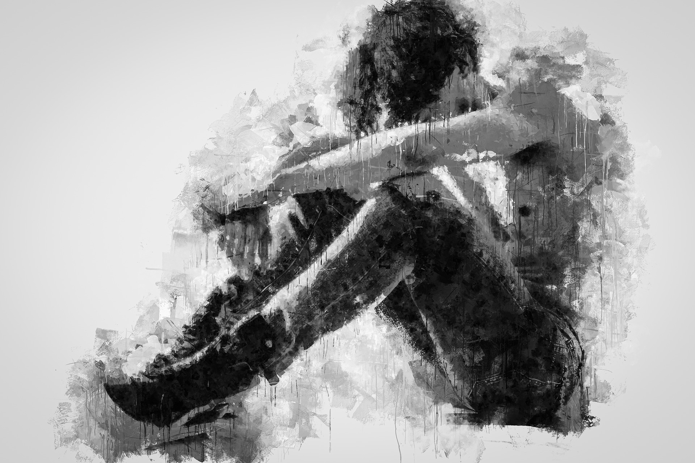

Juntamente com o problema da saúde mental existe a depressão e ela vem pela tristeza de perder alguém muito importante ou se martirizar com alguma coisa que passou, isso aconteceu com muitas pessoas, mas no caso de algumas pessoas não se teve uma força da sua mente porque não tinha mais aquele laço afetivo com isso acabou se calando e não desabafou para alguém mesmo sendo de forma digital nesse caso as pessoas com depressão não falam com pessoas que talvez não tenham sofrido em nenhum caso, seja no emprego ou na parte familiar e essas pessoas acabam se fechando para o mundo e isso prejudica cada vez mais uma pessoa. Se você estiver passando por isso peça ajuda porque você não está só, procure um psicologo ou até mesmo seu melhor amigo e conte para essa pessoa o que está sentindo e isso pode ajudar a sua vida.
A saúde mental é muito importante para o bom funcionamento do corpo e para que a pessoa tenha uma vida mais tranquila, mas com a Covid-19 ocorreu vários problemas que foram prejudicando a vida das pessoas e com isso o estresse aumentou, a falta de sono, o medo de ser contageado com essa doença etc. Nesse modo as pessoas começaram a ter transtornos mentais e isso começou a atrapalhar sua rotina e o convivio com a familia. Para conseguir sair desse problema com algumas dicas, primeiro planeje uma rotina mesmo que fique dentro de casa: mantenha horários regulares para se levantar e se deitar; mantenha os cuidados usuais e rotinas de alimentação. Segundo identifique pensamentos intrusivos, repetitivos e catastróficos que levem à ansiedade; aceite que eles existem, mas que não necessariamente correspondem à realidade. Descubra o que funciona para seu alívio. E por fim o terceiro cultive os laços afetivos: aproveite a convivência familiar; mantenha contato com amigos por mensagens, ligações ou vídeos. Telefone para alguém com quem não conversa há muito tempo. Com isso pode te ajudar a superar toda essa pandemia.
©Todos os direitos são reservados
Thiago Samuel dos Santos Silva, IDF, Turma B, 1° Info